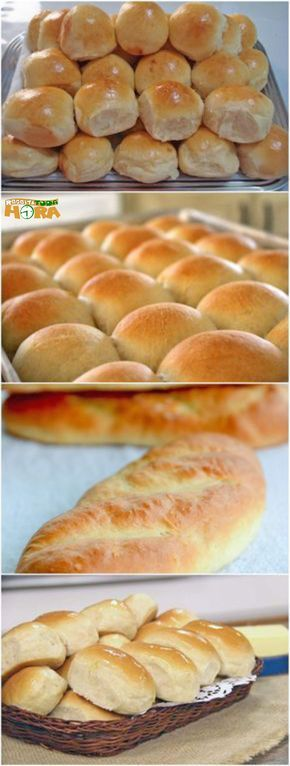

Salgados · Massas fritas/assadas
Pãezinhos rápidos

Ingredientes
- 2 xícaras de farinha de trigo
- 2 colheres e meia (chá) de fermento em pó
- 1 colher (chá) de sal
- 1/3 xícara de manteiga ou margarina gelada
- Farinha para polvilhar
Modo de preparo
- Pré-aqueça o forno em temperatura alta (250 °C). Peneire farinha, fermento e sal; incorpore a manteiga com duas facas até virar farofa.
- Amasse na bancada até integrar; abra com 1 cm de espessura.
- Recorte com cortador de 5 cm e disponha em assadeira sem untar.
- Asse 12–15 min até levemente dourados. Esfrie e congele se desejar.
Observação
Rendimento: 28 pãezinhos. Congele cobertos com plástico; descongele 1 h em temperatura ambiente. Varie com alcaravia, erva-doce ou linguiça antes de assar.